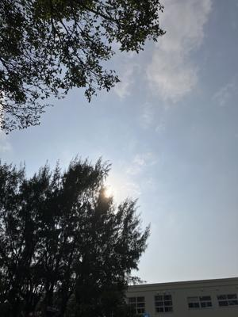

うるがいの話 ある日
最新: 懐かしい『黙想』【うるがいの話 ある日】とは 一日だけのプログです
『うるがいの話』の最新一日だけのプログで、通信料が少なく経済的だ。カニの画像をクリックすると全ての日付が載る『うるがいの話』サイトを表示します
|
|
【うるがいの話】 うるがい(ｳﾙｶﾞｲ urugai)とは、『もずくがに』の名前でとても大きくなります。 |
|---|---|
|
|
【カミマヤーの話】 猫のことを方言でマヤーといいます。カミマヤー（kamimayaa）とは、神の猫のことです。 |
|
【たながぁの音楽】 たながぁ（ﾀﾅｶﾞｰ tanagaa）とは手長えびのことで、何種類かあり大きいのは車 エビぐらいになります。 |

|
【ぶながぁの話】 ぶながぁ(ﾌﾞﾅｶﾞｰ bunagaa)とは、赤い髪の毛、赤い身体、そして身長は１ｍ２０ｃｍ ぐらい、川の蟹を食べているの目撃された。場所は沖縄県国頭郡大宜味村のと ある村僕の隣近所に住んでいる爺さんから、聞いた話です。 |
|
|
【ギーマの話】 ギーマ(giima)とは、山原の里山に咲くスズランに似た、 花を付けます。実は食べられます、 気が付くと口の周りが紫になっています。 |
2026年03月21日 (土）懐かしい『黙想』
15:22

懐かしい『黙想』 琉球新報 ティータイム ４８歳
小学校の頃、帰りの会に「黙想」の時間があった。クラスのみん
ながそろって数分間、目と口を閉じる。心安らかに、振り返りの
ひとときだ。その間、担任は連絡帳に目を通したり、答案に丸を
付けたりするため、長さも作法も先生の裁量次第だった。わが担
任の先生は、自宅から持ってきたラジカセで音楽をかけてくれた。
歌のないピアノ曲で、１曲が黙想１回分。カセット両面を１０日
ほどでひと回りする。長い、という向きもあったが、みんなあの
時間が大好きだった。唯一の手がかりは、カセットに手書きされ
ていた謎の単語「アムール」。これすらも長いこと忘れ去ってい
た。それがかのリチャード・クレイダーマンさんの大ヒットアル
バムだと分かったのは、４０年もたってからだ。カーラジオから
流れてきた時、まさに全身が耳になった。・・・・・・・・・・
フムフム、投稿者は８歳の時の経験である。私は高校３年のとき
担任が、ホームルームで歌『翼をください』などを合唱させた。
いいですね・・・・、リチャード・クレイダーマンとはユーチュ
ーブで確認した。あー、なるほど。
ドアが翼だ、ランボルギーニ！！か、ネットで検索したらシボレ
ーＣ８コルベットという車らしい。この車、既に契約済、値段も
晒してない。